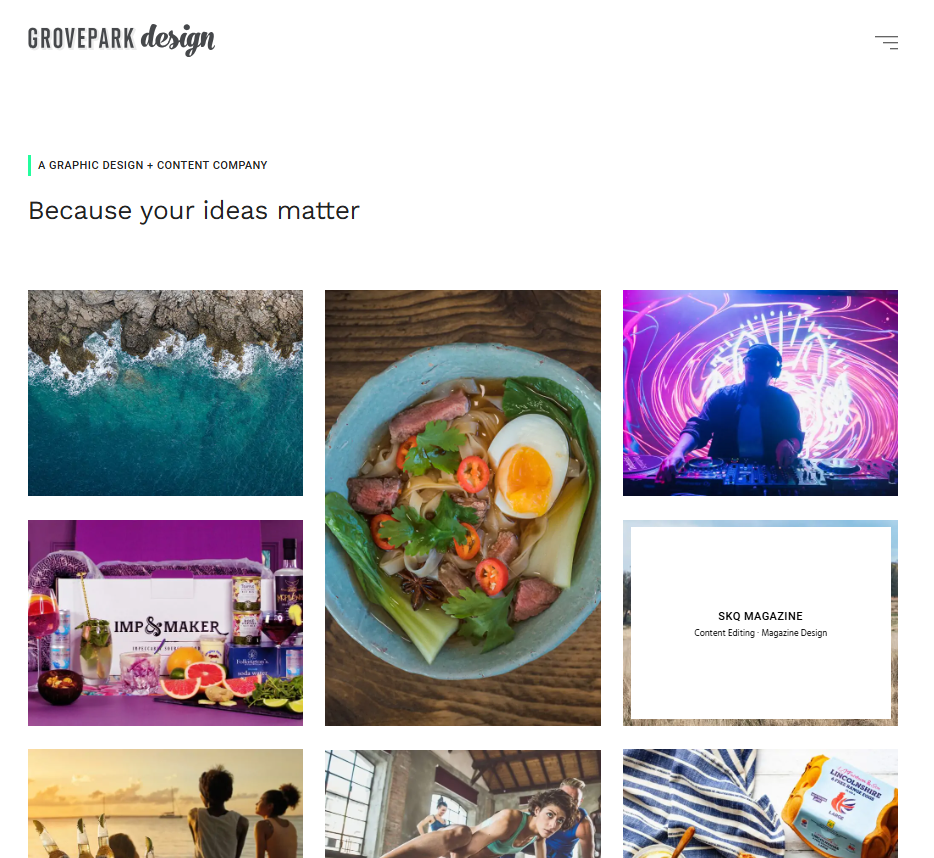
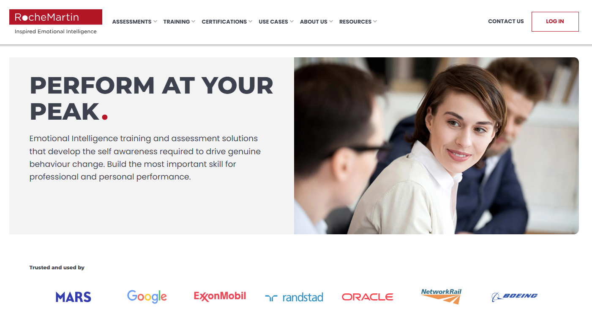
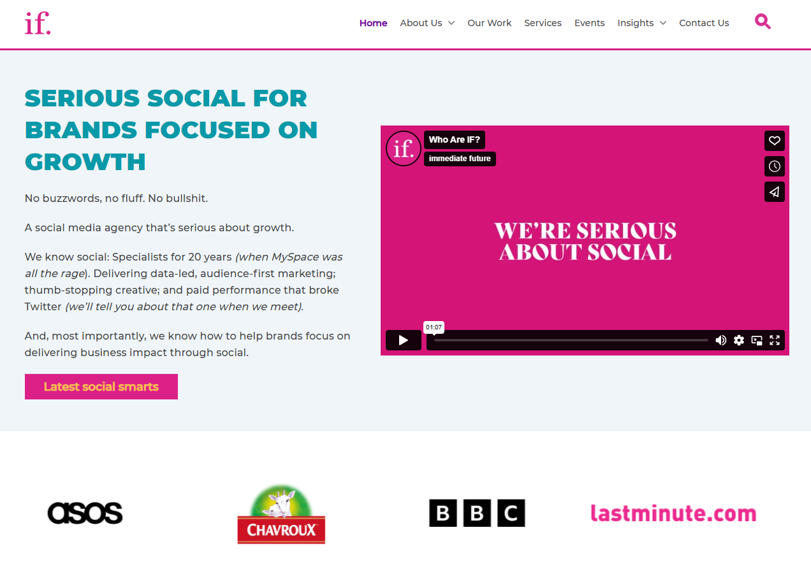
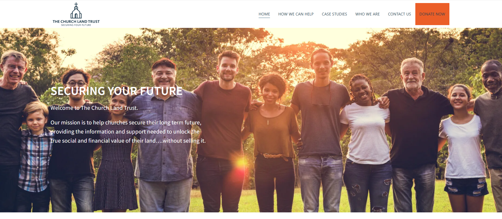

Projects support

As a digital agency providing website solutions, Offshorly's services include maintenance and support for deployed projects. As a CMS developer at Offshorly, we are expected to be flexible with our work and cater to various client requests as needed. Before working full-time with EBI AI, I worked on various websites to fix issues and provide solutions to client problems and requests.
As a CMS developer working under Offshorly, I was also tasked to work on these responsibilities:
Even when a project is already finished and deployed to production, Offshorly still provides maintenance and support services to clients to ensure the website is working properly and up to date.
Clients usually still have some things they want to change even after deployment. Working on their requests is part of our responsibilities as a CMS developer under Offshorly.
As a team, we are also expected to help each other when fixing bugs or working on unfamiliar projects. Getting stuck is a common scenario in the field of development, so collaborating with co-developers is essential in dealing with blockers efficiently.
Here are some of the projects or websites I provided support to as a CMS developer:
Grovepark is one of Offshorly's old main clients. As a junior developer, I was tasked to work with one of our senior developers to develop Grovepark design, which is a one-pager website for Grove Park Design Ltd.
Click the button below to dicover more about the website!
Explore Grove Park designWorking on the Rochemartin website involved adjusting the site's responsiveness to different screen widths, fixing their menu, and improving their CMS.
For Immediate Future, I addressed issues the client encountered while building a page on their website. I also created blocks for CTAs and incorporated forms into their webpages.
Click the button below to dicover more about the website!
Explore Immediate FutureOn The Church Land Trust website, I provided assistance in adjusting and optimizing image assets. This included resizing images and ensuring they displayed correctly across various devices.
Click the button below to dicover more about the website!
Explore The Church Land Trust